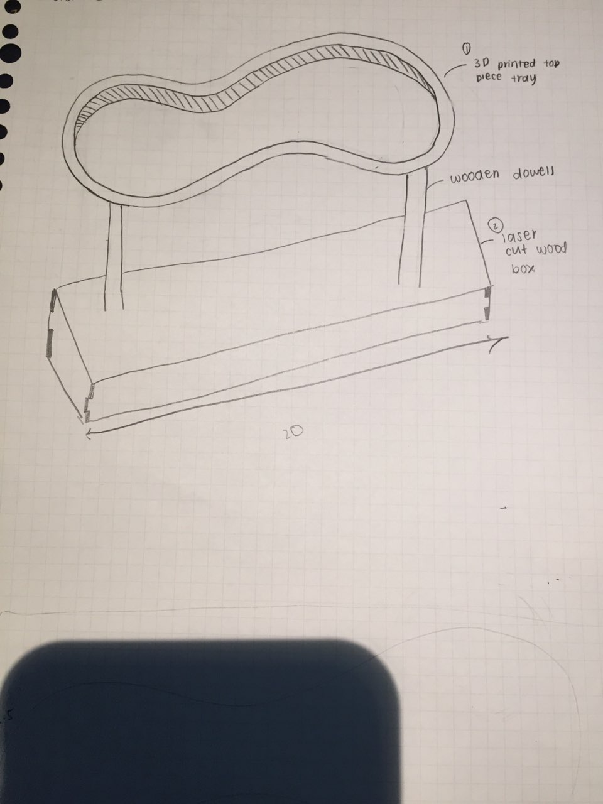

Interactive mood lamp tray :>
1. Idea
-For my final project, I wanted to make something that as aesthetically pleasing that was not just for decoration but that was functional as well. Hence i have decided to make an interactive mood lamp tray that changes colour when you go near it. It functions as a mood lamp in which it brightens up the area with its soothing colours as well as serves as a place when you can keep items such as keys or makeup. I was inspired to make this after seeing a minimalistic mood lamp that was beautiful in itself but did not serve anyother function and thus i decided to build up on that idea but add my own personal touch to it. This is the lamp where i got my inspiration from!

2. Sketches
-As for my mood lamp tray, i came out with a wavy box with a stand design. Here is how it looks like!

3. Materials needed
- Arduino UNO
- Neopixel LED
- PIR sensor
- Wires(male and female)
- 3D printer to print parts
- Laser cutter and wood
- Decorative beads(optional)
4. Fusion 360
-Here is how the parts looks on fusion 360 as i was designing them :>
- Tray body
- Tray base plate
- Dowels to attach tray to stand
- Parametic box base

5. Arduino, PIR and Neopixel LED set up
-Here is how it looks like

6. Code
-Here is the code to connect the arduino, PIR sensor and neopixel LED together.
7. Final product!
-Here is the finished mood lamp tray and how it works.